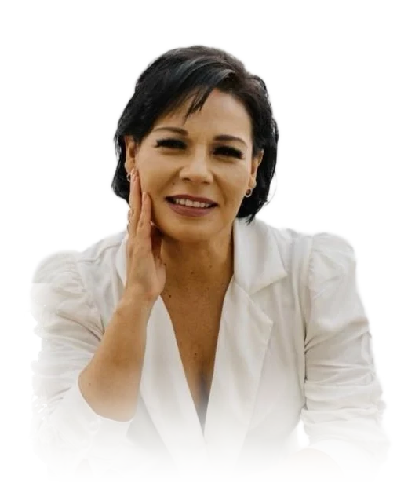

Inicio / Trayectoria
Trayectoria
Empresaria, consultora en imagen, capacitadora y líder en desarrollo económico y empoderamiento femenino.

Más de 20 años dirigiendo centros de belleza y formando personas en capacitación por competencias, desarrollo humano, imagen pública y empoderamiento femenino.
Es especialista en crear, expandir y posicionar marcas, en formar emprendedoras y en vinculación empresarial. Ha trabajado con el sector público, privado y social, con enfoque en desarrollo económico sustentable, autonomía financiera de la mujer y fortalecimiento de liderazgos.
Hoy es Directora General de un centro de belleza y comercialización de productos de belleza con marca propia de maquillaje profesional, y Directora Académica de un centro de capacitación en competencias y preparatoria.
Momentos clave
Consejera Nacional de Juventudes Impactando México A.C.
Presidenta Estatal de AMMJE Guanajuato (2020–2022), con representación en Celaya.
Programas de Desarrollo Económico Sustentable y vinculación empresarial en Apaseo el Grande.
Conducción y dirección de un programa de TV local con cápsulas de imagen. Directora Consultora de BNI Guanajuato.
Dirección de estéticas y escuela de belleza con consultoría en imagen personal.
Apertura de su tercera clínica de belleza como propietaria.
Apertura de su escuela de belleza y segunda sucursal de estética.
Apertura de su primera clínica de belleza.
Capacitadora en empresas e instituciones como CFE, DIF, Institutos de la Mujer y universidades.
Distribuidora regional de cosméticos con una red de 178 vendedoras.
Líder de una agrupación juvenil cultural y deportiva de 400 miembros en Cortazar.
Formación y certificaciones
- Diplomado en Procuración de Fondos2022
- Facilitadora Mujeres del Mañana, Tec de Monterrey2021
- Maquillista Profesional2021
- Certificación BNI Director Consultor México2017
- Capacitadora e Instructora por Competencias2015
- Consultora en Imagen Pública, Colegio de Consultores en Imagen2014–2015
- Estilismo Profesional, Guadalajara2009–2011
- Cosmetología Clínica, Guadalajara2009–2011
- Programación Neurolingüística, Guadalajara2001
- Psicología y Desarrollo Humano, UNIVA1998–2000
Liderazgo institucional
- Presidenta, AMMJE Guanajuato2020–2022
- Miembro activo, AMMJE A.C.Desde 2013
- Consejera Nacional, Juventudes Impactando México A.C.Desde 2021
- Consejera, CECyTE Apaseo el GrandeGuanajuato
- COPLADEM: Seguridad, Protección Civil y Desarrollo EconómicoCelaya